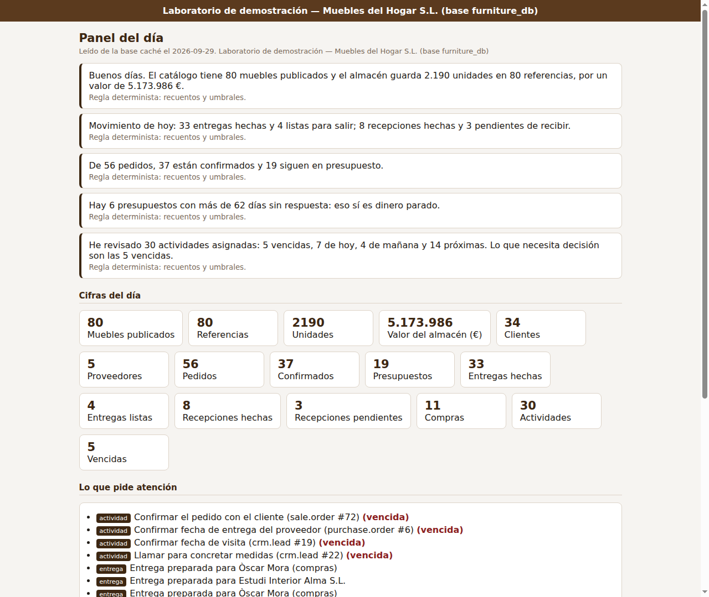
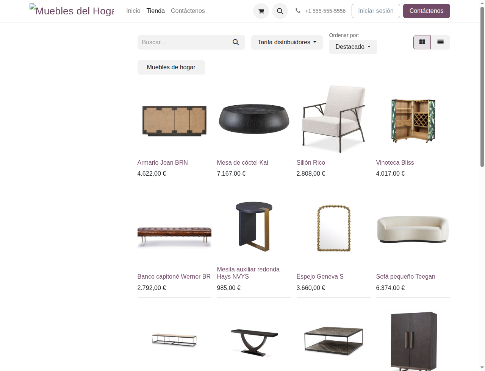
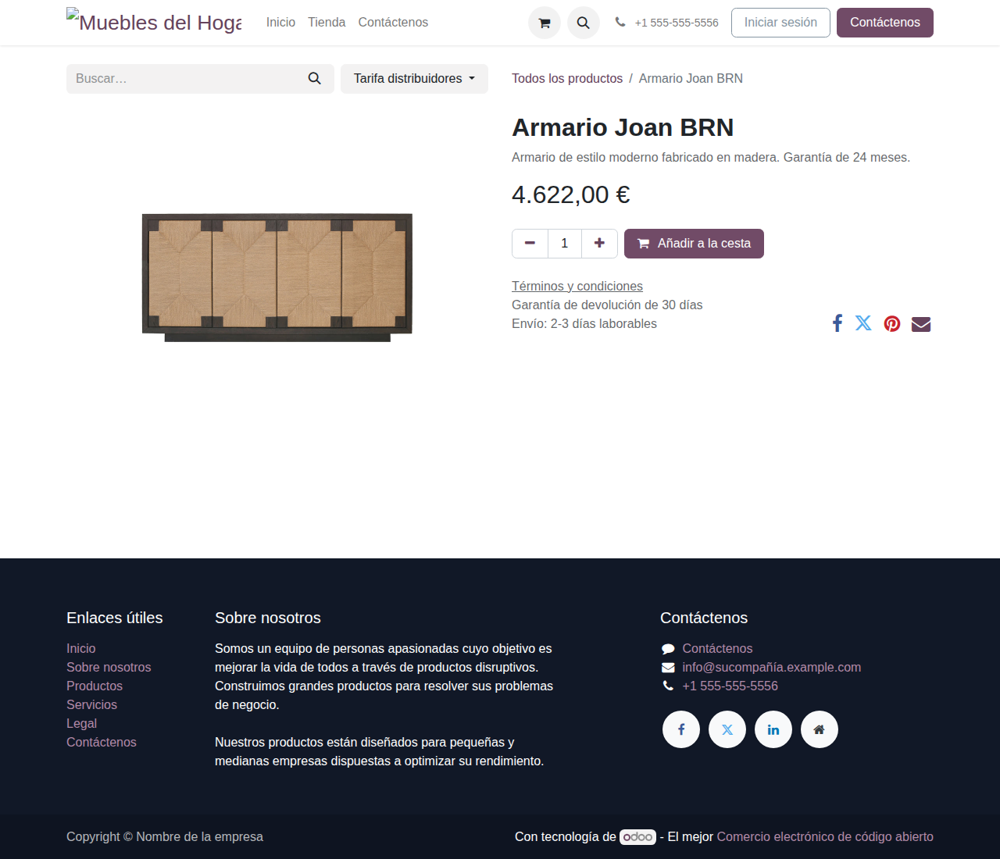

Laboratorio verificable · datos de ejemplo · no conectado a sistemas reales
Architettura agnóstica: el mueble es solo el caso de uso concreto. Lo que se demuestra aquí es la capacidad de:
2.190 unidades en existencia, cada una trazada a un movimiento real — diferencia con el libro siempre 0.
El panel del día muestra qué pedidos confirmar, qué actividades vigilar y si el dato está sano — sin rellenar huecos.
Si no hay datos o clave de modelo, el asistente dice "no lo sé" en vez de inventar respuestas verificables.
66 tests automáticos + verificador de estado inicial — cada afirmación se puede ejecutar y comprobar.
Un laboratorio Odoo 17 verificable que incluye:
furniture.product con 80 productos de ejemploImportante: el mueble de hogar es solo el ejemplo concreto elegido. La arquitectura, los patrones y las demostraciones técnicas son completamente agnósticas y aplicables a cualquier dominio (industrial, logístico, servicios, etc.).
Para demostrar capacidad real de montar un ERP de empresa —y no una maqueta— con criterio de ingeniería:
Tres reglas sostienen todo el proyecto:
Odoo 17 con PostgreSQL 15, contenedores separados y aislados del resto, servido por HTTPS propio. El laboratorio vive en un servidor modesto: lo que se demuestra aquí no necesita infraestructura de gran empresa.
Base furniture_db en su propio contenedor, con filtro de bases: el servidor no sirve ninguna otra base. Un dominio propio, certificado HTTPS y el puerto de Odoo cerrado al exterior.
Los mismos 80 muebles, con el mismo precio y el mismo stock, aparecen en el modelo propio, en los productos estándar y en la tienda. Ninguna pantalla cuenta una historia distinta.
1.469 plantillas traducidas, el CRM con sus tramos en español (Nuevo, Calificado, Propuesta, Ganado), IVA del 21 % en productos, pedidos y compras, y formato español de importes.
# Comprobación de que el almacén cuadra con el libro (consulta real al laboratorio) existencias ......... 2.190 respaldo movimientos . 2.190 diferencia ........... 0 <- nada sin justificar # Lo que dice el panel del día (reglas, no modelo): "Buenos días. El catálogo tiene 80 muebles publicados y el almacén guarda 2.190 unidades en 80 referencias, por un valor de 5.173.986 €." "De 56 pedidos, 37 están confirmados y 19 siguen en presupuesto." "He revisado 30 actividades asignadas: 5 vencidas, 7 de hoy, 4 de mañana y 15 próximas."
Diez componentes con su estado real: VERIFICADO significa que hay una comprobación hecha y citada, no una intención.
80 productos con identificadores correlativos, precio, coste, categoría, material, estilo, garantía y descripción. Los tres catálogos (propio, estándar, tienda) muestran lo mismo.
VERIFICADOTienda online en español, con nueve secciones propias, precios en euros y ficha de producto con su fotografía.
VERIFICADO2.190 unidades respaldadas al 100 % por movimientos trazados. Cuando hubo un descuadre, se buscó la causa y se cerró: no se ajustó a ojo.
VERIFICADO56 pedidos de venta (37 confirmados y 19 presupuestos), 11 pedidos de compra, 48 albaranes y un almacén con entregas hechas, listas y recepciones pendientes.
VERIFICADOEspañol cargado y por defecto, euro como única moneda, IVA del 21 % aplicado a productos, pedidos y compras, y empresa con dirección y NIF de laboratorio.
VERIFICADORetirado el catálogo genérico y sus facturas, renombrados los socios heredados, sustituidas las categorías de la demo y pasadas a español las oportunidades y actividades.
VERIFICADOServicio propio que lee directamente por SQL (sin ORM), muestra cifras, lo que pide atención y salud del dato. Incluye botón de reinicio para administradores.
VERIFICADOBusca en los documentos reales del proyecto (README, tests, panel, scripts). Si no hay clave de modelo, devuelve fragmentos exactos en vez de redactar. Nunca inventa.
VERIFICADO66 pruebas pytest (62 sin Odoo/PostgreSQL, 4 contra el laboratorio en marcha). Plus: verificador de 14 recuentos contra el estado inicial.
VERIFICADOEl panel puede devolver el laboratorio a su estado inicial desde una instantánea canónica. Exige sesión de administrador y tiene tres minutos de espera entre reinicios.
VERIFICADONo basta con el botón: se paró Odoo, se rehizo la base, se cargó la instantánea y se arrancó. El manifiesto de 14 recuentos salió en verde y el almacén siguió cuadrando.
VERIFICADOEs un servicio propio, independiente de Odoo: lee la base por consulta directa y solo lee. Si el laboratorio no responde, sirve la caché del día y lo declara, en lugar de enseñar una pantalla rota o inventarse cifras.
Las frases de resumen son reglas deterministas: se pueden leer, discutir y corregir. La parte de modelo de lenguaje está preparada para redactarlas, y si no hay clave configurada el panel lo dice abiertamente.
El botón de reinicio exige haber entrado antes en Odoo como administrador: un visitante anónimo recibe un 403. Es la única acción del panel que escribe algo.
Pantallazos tomados del laboratorio publicado mientras se preparaba esta página:



Toda cifra citada en esta página (80 muebles, 2.190 unidades, 56 pedidos, 11 compras, IVA del 21 %, 1.469 plantillas traducidas) sale de consultas hechas sobre el laboratorio en marcha. Los pantallazos son del propio laboratorio publicado, sin retoques.
El laboratorio está publicado y se puede tocar. Se sirve únicamente la base furniture_db, aislada por configuración: no hay ningún dato real detrás de estas claves.
visita · clave Visita-lSJyr0yzCSQElzGFEs un usuario de pruebas con ventas, compras y almacén, y sin acceso a la configuración de la empresa. La contraseña del administrador no se publica. El laboratorio está aislado por configuración: no hay ningún dato real detrás de estas claves.
El servidor devuelve el laboratorio a su estado inicial cada media hora, así que lo que cambies no se queda para el siguiente que entre. No hay botón de reinicio a propósito: así nadie puede dejar la demo rota para otro.
Abrir el panel del día Ver la tiendaCada decisión con su motivo y su contrapartida. Ninguna es la única posible: son las que se sostienen con lo que hay.
Montar el ERP sobre Odoo da contabilidad, almacén, compras y web ya probados por miles de empresas; el trabajo se concentra en el dato y en la ambientación. La contrapartida: se hereda su modelo y hay que limpiar los restos de la demo, cosa que se hizo y se documenta.
El modelo propio (furniture.product), los productos estándar y la tienda muestran los mismos 80 muebles con el mismo precio y las mismas existencias. Cuando hubo tres catálogos a la vez se unificaron; mantenerlos separados habría garantizado que se contradijeran.
Es un servicio aparte, con la librería estándar de Python y sin dependencias: si Odoo está caído o migrando, el panel sigue diciendo lo que hay. A cambio, las consultas van contra el esquema de Odoo y hay que revisarlas si algún día se cambia de versión.
Si no puede leer, el panel sirve la última cifra del día y lo dice; nunca inventa un número. Y la parte de redacción por IA se declara: sin clave de modelo, las frases son reglas, y se ve.
El laboratorio se rompe probando, así que hay botón para devolverlo a su instantánea canónica. Se exige sesión de administrador de Odoo (un anónimo recibe un 403) y tres minutos entre reinicios, para que un visitante no borre la demo que otro está mirando.
El asistente técnico busca en los documentos reales del proyecto (README, tests, panel y scripts) y responde con eso. Si no encuentra nada, lo dice. Si no hay clave de modelo, enseña los fragmentos exactos en lugar de aparentar.
Módulo propio de Odoo 17 en Python: modelo furniture.product, vistas de lista, formulario y búsqueda, permisos de acceso, controlador web para el panel del módulo y datos del catálogo en CSV.
PostgreSQL 15 y Odoo en contenedores separados y aislados, nginx delante con HTTPS de Let's Encrypt, y toda la pieza del panel en un servicio systemd propio que solo lee.
66 pruebas de pytest sobre catálogo, módulo, panel y asistente, ejecutadas en cada push con GitHub Actions; un verificador de 14 recuentos contra el estado inicial y una instantánea canónica para restaurarlo.
El ciclo real del laboratorio, de punta a punta: quién escribe, dónde queda y quién lo lee.
Oficina (Odoo 17) Tienda pública
│ ventas, compras, CRM │ pedidos del escaparate
▼ ▼
PostgreSQL 15 ── furniture_db (contabilidad, almacén con movimiento trazado)
│
├──► Panel del día (servicio propio, solo lee) ──► «qué toca hoy» y salud del dato
│
└──► Asistente técnico (este chat) ──► responde con los documentos del repositorio
│
▼
¿cuadra? ¿está probado? ¿puedo montarlo?
66 pruebas con pytest: 62 corren sin Odoo ni PostgreSQL y se lanzan en cada push con GitHub Actions; las otras 4 van contra el laboratorio en marcha y se saltan solas cuando no está.
80 fichas con identificadores correlativos, reparto por las 9 categorías, precios y costes con margen coherente, existencias enteras, garantía de 24 meses y descripciones en español. Si alguien toca el CSV y descuadra el reparto, la suite lo dice.
Manifiesto con sus dependencias y su licencia, versión de Odoo 17, cada fichero declarado existe, las vistas son XML válido y usan el modelo propio, los permisos son los correctos, el controlador exige sesión y el modelo declara todos los campos del catálogo.
Formato español de importes y porcentajes, las frases del resumen con sus cifras, qué dice cuando un dato de salud falla y qué ignora cuando no aplica, y la configuración del laboratorio por variables de entorno.
Que encuentre los fragmentos correctos, que cite fichero y línea, que no use los documentos pesados, que diga «no encuentro nada de eso» cuando la pregunta es inventada y que, sin clave de modelo, devuelva los fragmentos en vez de redactar.
# En tu máquina, sin Odoo ni PostgreSQL pip install -r requirements-dev.txt python -m pytest # 62 pruebas # Contra el laboratorio en marcha (Odoo, panel y verificador) MUEBLES_LAB=1 python -m pytest -m vivo # 4 pruebas # El verificador del estado inicial del laboratorio python3 panel/demo_restaurar_muebles.py --verificar # 14 recuentos OK
Las pruebas y el flujo de integración continua están en el repositorio: carpeta tests/ y resultados en Actions. En cada push se ejecutan solas.
Todo lo que se cuenta aquí está en GitHub: el módulo, los scripts que montaron el laboratorio, el panel, el asistente y las pruebas.
tests/ es la mejor radiografía del proyecto: dice lo que se da por bueno y lo comprueba.panel/) es el sitio donde se ve la forma de trabajar: solo lee, declara lo que no sabe y no depende del ORM.Responde solo con lo que hay en el repositorio: README, decisiones, panel, scripts y pruebas. Si la respuesta no está ahí, lo dice en lugar de inventarla.
El asistente cita de qué fichero del repositorio saca cada respuesta.